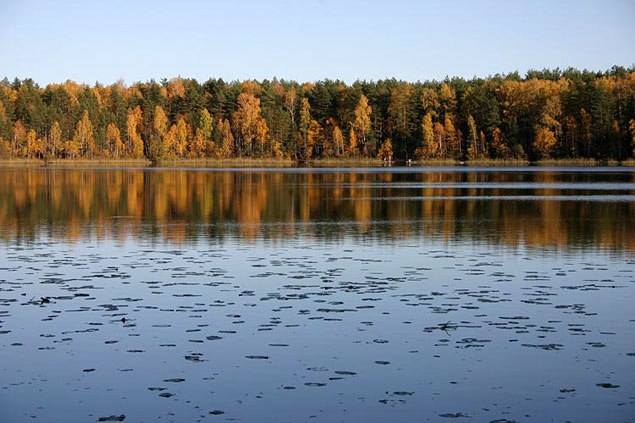
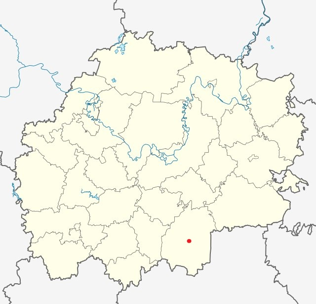

О моей родине
Сараи - поселок городского типа, административный центр Сараевского района, Рязанской области. Население - 5462 человека. Расположен на реке Вёрда(бассейн Оки), в 182 км к юго-востоку от Рязани. Железнодорожная станция Вёрда на линии Ряжск - Пенза. Междугородними автобусными маршрутами. Климат умеренно-континентальный.
Населенный пункт впервые упоминается в 1960 году. Земли, на которых лежит населенный пункт, в то время носили название Дикое поле и были ареной регулярных столкновений с кочевниками. В середине XIX землями в округе владели по большей части помещики. В 1871 году в селе Сараи открылась земская школа, в 1880 году было основано училище. Экономическая актиность в селе и его окрестностях была связана с торговлей сельскохозяйственными продуктами.

